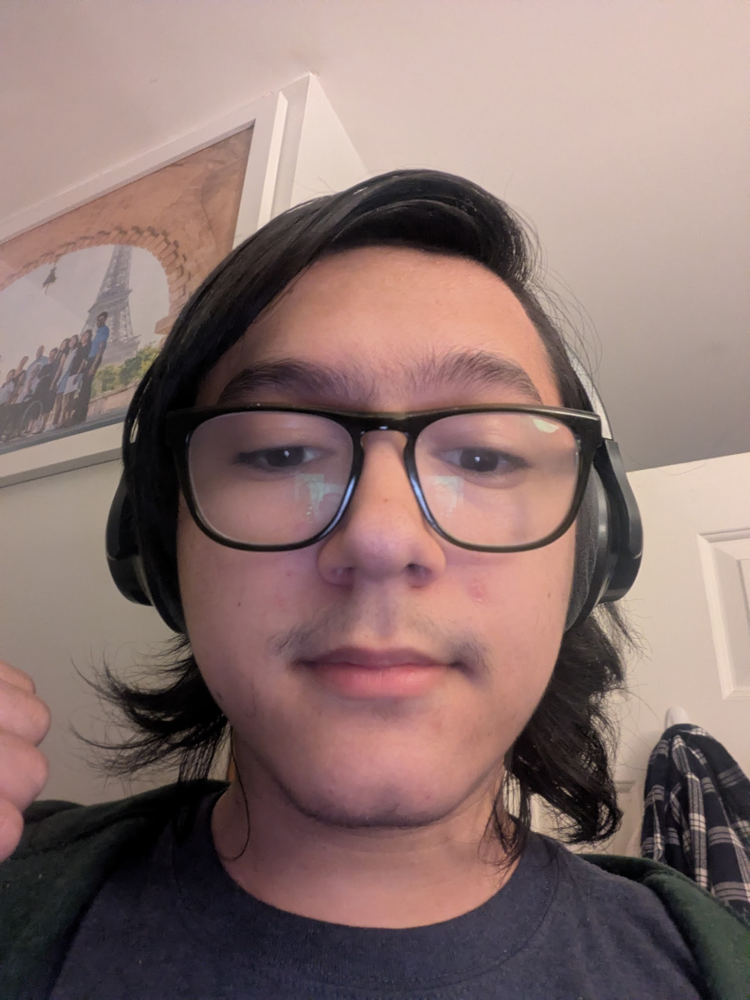
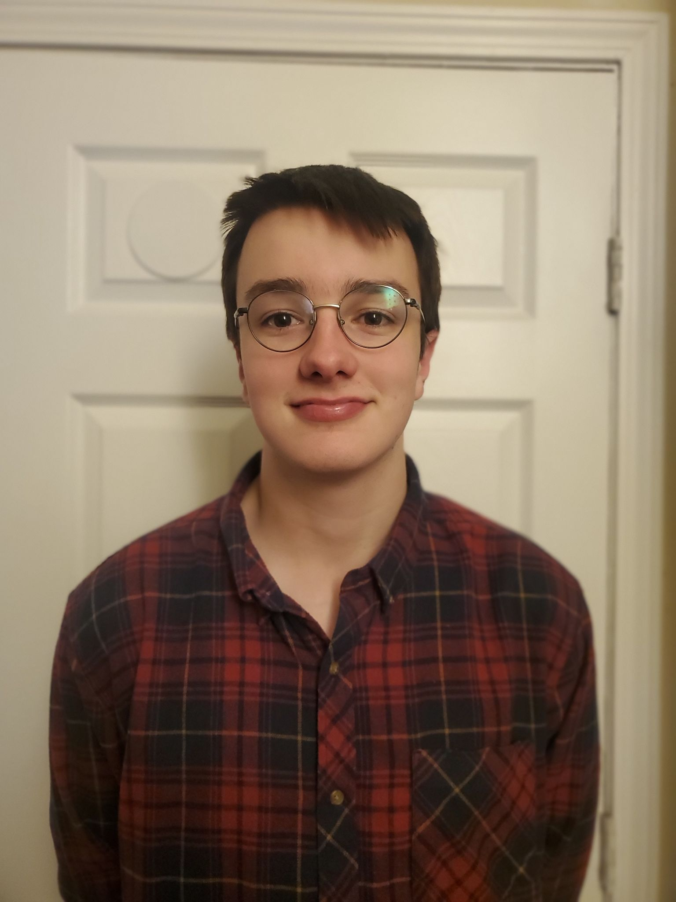
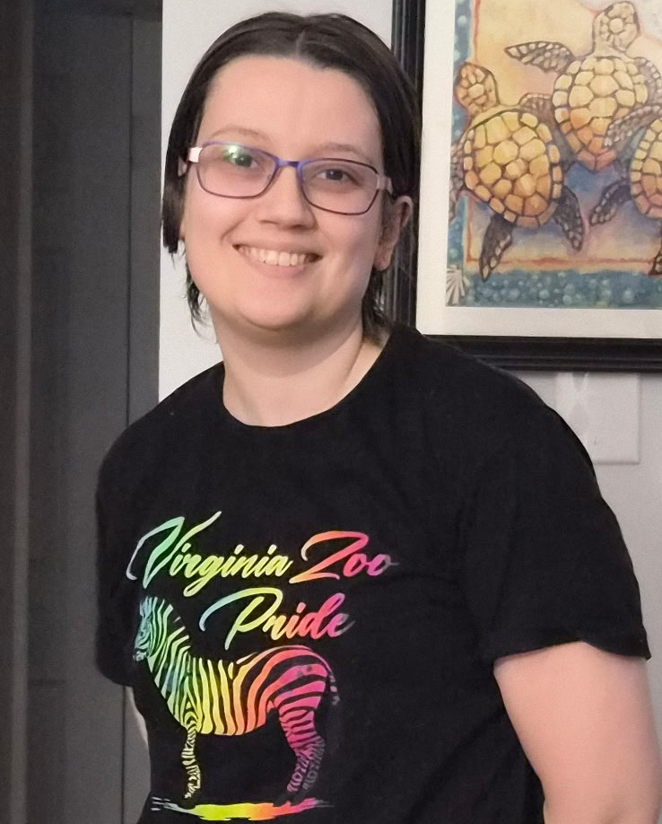
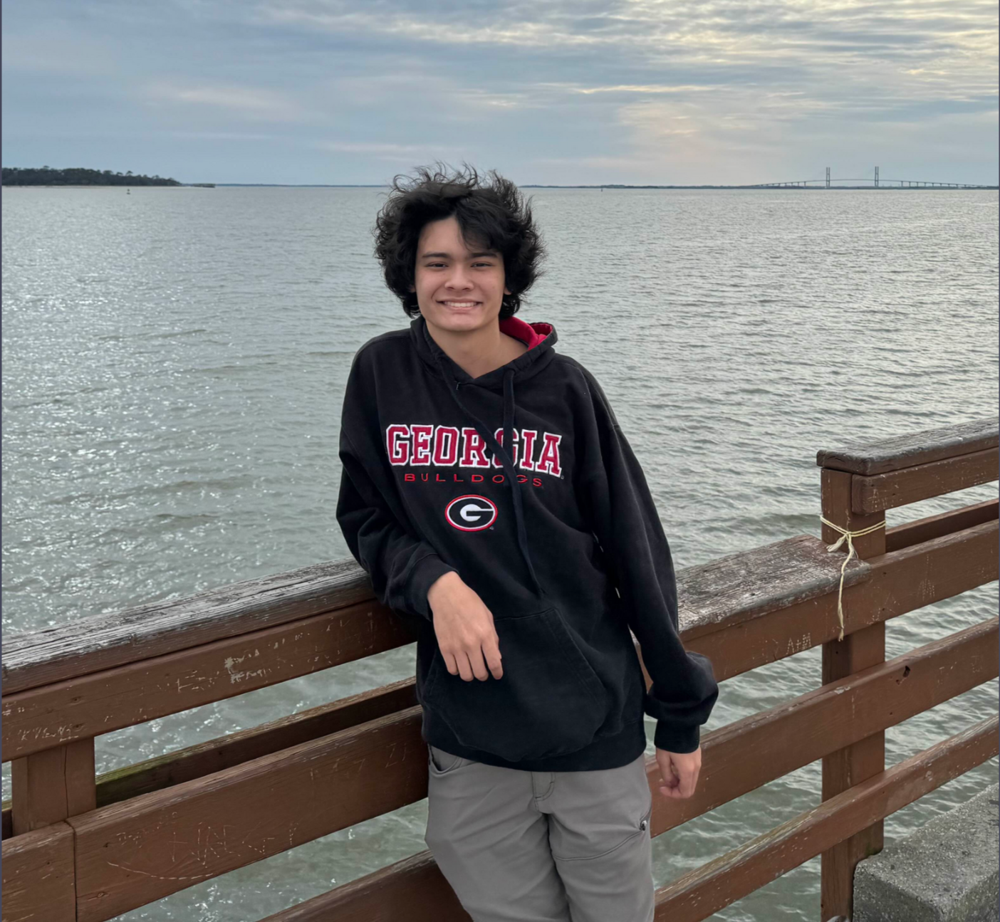

Ayden Garcia
Team member
Ayden Garcia is a 20 year old from Chesapeake Virginia. He is a junior majoring in computer science. In his free time he likes trying new restaurants, snow skiing, and scuba diving. After graduation he is pursuing law school with the intent to be a criminal prosecutor.

James Moore
Team member
James Moore is a 22 year old from Virginia Beach, Virginia, majoring in computer science. He enjoys making music and video games in his free time.

Cameron Zell
Team member
Cameron Zell is a 20 year old Computer Science major from Haymarket, VA. His hobbies include video games, rock climbing, and various social activities.

Riley Reynolds
Team member
Riley Reynolds is a 30 year old computer science major from Newark, OH. They currently work as a cashier at the Virginia Zoo and enjoy reading and playing video games.

Trey Leverett
Team member
Trey Leverett is a 21 year old from Virginia Beach, Virginia. He is a junior at ODU majoring in Computer Science and currently work as a System Administrator for the ODU CS department. He enjoys rollerblading, collecting and using fountain pens, and tinkering with his homelab.